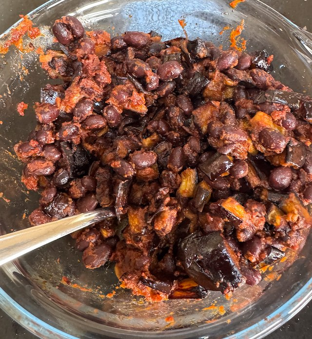

Aubergine and Blackbean Salad

Serves: 4
Cook Time: 1 hour
Ingredients
- 2 aubergine, 1cm dice
- 1 tin blackbeans, drained and rinsed
- 2 tbsp tomato puree
- 1 tbsp ground cumin
- 1 tbsp smoked paprika
- 1 tsp sugar
- olive oil
- Dressing
- 3 tbsp olive oil
- 1 tbsp red wine vinegar
- salt and pepper
Method
Aubergine. Toss the aubergine with salt and olive oil. Cremate in oven for 40 min, 180°C fan.
Beans. Gently fry the tomato puree with the cumin, paprika and sugar for a few min. Add the blackbeans and stir. Keep warm.
Dressing. Whisk together the dressing ingredients.
Assemble. Add the aubergine to the bean mixture, then stir in the dressing.